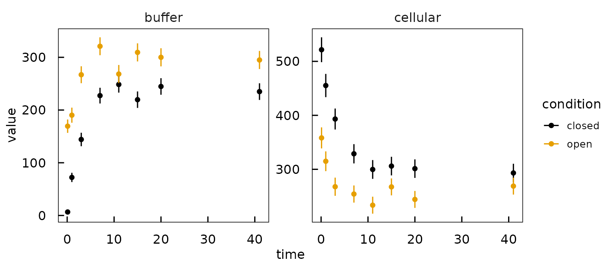
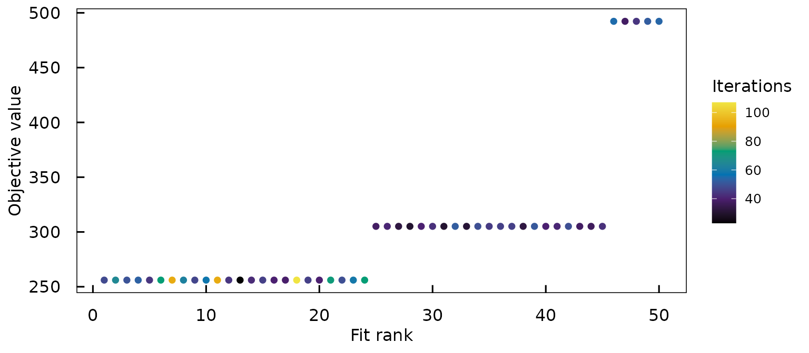
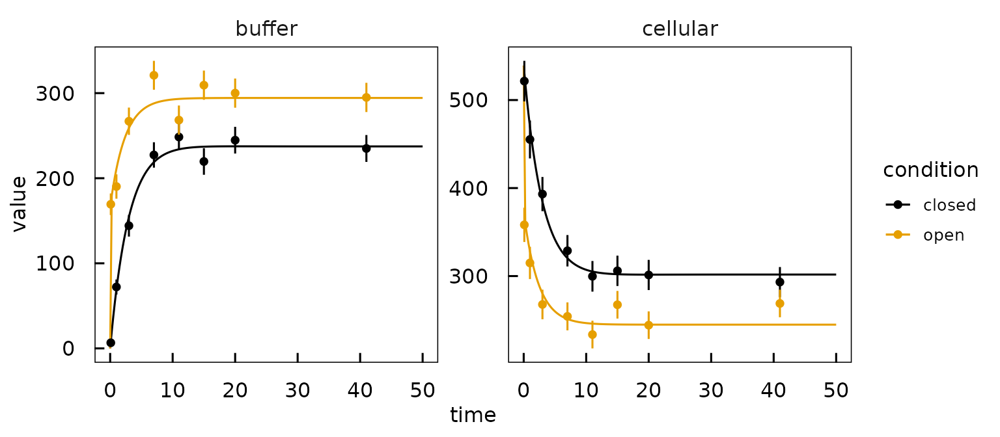
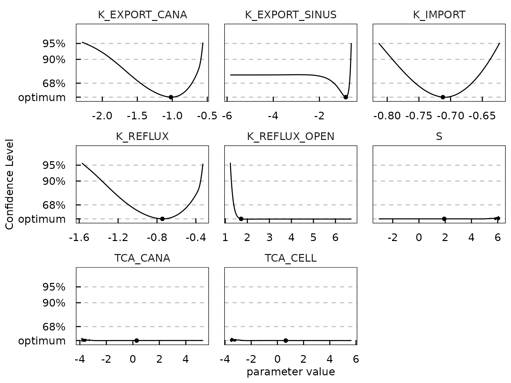

A model of bile acid transport in hepatocytes, fitted to two experimental conditions from many starts and profiled. The guide covers each step on a larger model.
Data and conditions
Bile acid in buffer and cells, measured with closed and opened tight junctions, one data set per condition.
data(badata)
data <- as.datalist(badata)
plot(data)
Model definition
Bile acid moves from the buffer into the cells, from the cells into buffer or canaliculi, and from the canaliculi back into the buffer.
reactions <- eqnlist() |>
addReaction("TCA_buffer", "TCA_cell", "k_import*TCA_buffer", "uptake") |>
addReaction("TCA_cell", "TCA_buffer", "k_export_sinus*TCA_cell", "sinusoidal export") |>
addReaction("TCA_cell", "TCA_cana", "k_export_cana*TCA_cell", "canalicular export") |>
addReaction("TCA_cana", "TCA_buffer", "k_reflux*TCA_cana", "reflux into the buffer")
reactions
#> Conserved quantities:
#> totalTCA = 1*TCA_buffer+1*TCA_cell+1*TCA_cana
#>
#> Check Educt -> Product Rate Description
#> 1 TCA_buffer -> TCA_cell k_import*TCA_buffer uptake
#> 2 TCA_cell -> TCA_buffer k_export_sinus*TCA_cell sinusoidal export
#> 3 TCA_cell -> TCA_cana k_export_cana*TCA_cell canalicular export
#> 4 TCA_cana -> TCA_buffer k_reflux*TCA_cana reflux into the bufferodemodel() generates C++ code for ODE and sensitivities,
Xs() makes the prediction function, Y() the
observables: cells and canaliculi are measured together, both with scale
s. Expressions follow the expression
language of cppDE, including switches such as
piecewise().
x <- Xs(odemodel(reactions, modelname = "start_x", compile = FALSE))
observables <- eqnvec(buffer = "s*TCA_buffer", cellular = "s*(TCA_cana + TCA_cell)")
g <- Y(observables, x, modelname = "start_g", compile = FALSE)P() maps estimated to model parameters, all on log10
scale, with an empty buffer at the start. branch() makes
one transformation per condition, open junctions with a separate reflux
rate K_REFLUX_OPEN. All three function objects compile into
one shared object.
trafo <- eqnvec() |>
define("x <- x", x = getParameters(x, g)) |>
define("TCA_buffer <- 0") |>
insert("x <- 10^y", x = .currentSymbols, y = toupper(.currentSymbols)) |>
branch(conditions = c("closed", "open")) |>
insert("K_REFLUX <- K_REFLUX_OPEN", conditionMatch = "open")
trafo
#> $closed
#> Idx Inner <- Outer
#> 1 k_export_cana <- 10^K_EXPORT_CANA
#> 2 k_export_sinus <- 10^K_EXPORT_SINUS
#> 3 k_import <- 10^K_IMPORT
#> 4 k_reflux <- 10^K_REFLUX
#> 5 s <- 10^S
#> 6 TCA_buffer <- 0
#> 7 TCA_cana <- 10^TCA_CANA
#> 8 TCA_cell <- 10^TCA_CELL
#>
#> $open
#> Idx Inner <- Outer
#> 1 k_export_cana <- 10^K_EXPORT_CANA
#> 2 k_export_sinus <- 10^K_EXPORT_SINUS
#> 3 k_import <- 10^K_IMPORT
#> 4 k_reflux <- 10^K_REFLUX_OPEN
#> 5 s <- 10^S
#> 6 TCA_buffer <- 0
#> 7 TCA_cana <- 10^TCA_CANA
#> 8 TCA_cell <- 10^TCA_CELL
#>
#> attr(,"tree")
#> condition
#> closed closed
#> open open
p <- P(trafo, modelname = "start_p", compile = FALSE)
compile(x, g, p, output = "start", cores = 6)Likelihood, prior and fit
normL2() returns \(-2 \log
L\) of the data; a weak prior from constraintL2()
keeps parameters the data do not determine finite.
outerpars <- getParameters(p)
pouter <- structure(rep(-1, length(outerpars)), names = outerpars)
obj <- normL2(data, g * x * p, attrName = "data") +
constraintL2(pouter, sigma = 4, attrName = "prior")trust() is a trust-region fit from one start;
mstrust() runs it from 50 random starts around
pouter, standard deviation 4 on log10 scale (options).
set.seed(5555)
fits <- mstrust(obj, pouter, sd = 4, fits = 50, cores = 6)
fits <- as.parframe(fits)plotValues() sorts the fits by value; a plateau at the
lowest value indicates the global optimum.
plotValues(fits)
as.parvec() takes the best fit.
best <- as.parvec(fits)
fits[1, c("value", "converged", "iterations")]
#> value converged iterations
#> 1 256.0645 TRUE 48
best
#> Parameter vector:
#> TCA_CELL : 0.640397
#> TCA_CANA : 0.290498
#> K_IMPORT : -0.712177
#> K_EXPORT_SINUS : -0.860138
#> K_REFLUX : -0.744269
#> K_EXPORT_CANA : -1.01912
#> S : 1.93089
#> K_REFLUX_OPEN : 1.71784
#>
#> Attributes:
#> deriv : <none>
#> deriv2 : <none>
#> fixed : <none>
plot((g * x * p)(seq(0, 50, length.out = 200), best, deriv = FALSE), data)
Profile likelihood
profile() moves each parameter away from the optimum and
reoptimizes the others. A confidence interval ends where the profile
crosses the threshold.
profiles <- profile(obj, best, whichPar = names(best), method = "integrate", cores = 6,
limits = c(lower = -5, upper = 5), stepControl = list(stop = "data"))
plotProfile(profiles, mode == "data")
confint(profiles, val.column = "data")
#> name value lower upper
#> K_EXPORT_CANA K_EXPORT_CANA -1.0191202 -2.2432551 -0.5640131
#> K_EXPORT_SINUS K_EXPORT_SINUS -0.8601384 -Inf -0.6216848
#> K_IMPORT K_IMPORT -0.7121769 -0.8129339 -0.6231451
#> K_REFLUX K_REFLUX -0.7442694 -1.5463914 -0.3295158
#> K_REFLUX_OPEN K_REFLUX_OPEN 1.7178424 1.2327518 Inf
#> S S 1.9308943 -Inf Inf
#> TCA_CANA TCA_CANA 0.2904978 -Inf Inf
#> TCA_CELL TCA_CELL 0.6403966 -Inf InfS, TCA_CELL and TCA_CANA are
flat, a structural non-identifiability: smaller initial amounts
compensate a larger scale. Symmetries finds and removes it
systematically; the bile acid
project fixes the scale, starts the canaliculi in steady state and
goes on to prediction bands. K_EXPORT_SINUS and
K_REFLUX_OPEN are bounded on one side only, a practical
non-identifiability.
Terminology
| term | meaning |
|---|---|
| outer parameters | parameters the optimizer sees, here K_IMPORT,
S, … on log10 scale |
| inner parameters | parameters of ODE and observables in one condition, here
k_import, s, … |
| condition | one experimental setting with own data and inner parameters, here
closed, open
|
parfn |
parameter transformation, outer to inner: P(),
Pexpl(), Pimpl()
|
prdfn |
prediction function, parameters to trajectories: Xs(),
Xf()
|
obsfn |
observation function, trajectories to observables or errors:
Y()
|
objfn |
objective, \(-2 \log L\) or with a
prior \(-2 \log\) of the posterior:
normL2(), constraintL2()
|
+ and branch() join conditions;
* composes function objects by the chain rule, so every
call returns value, gradient and Hessian in the outer parameters.
Next steps
- Setting up models: reactions, compartments, error models, steady states and events on the NFκB model.
- Optimization and Profile likelihood: fits and identifiability.
-
Nonlinear mixed-effects models: random
effects with
em(). - Installation and troubleshooting: compilers and Python.